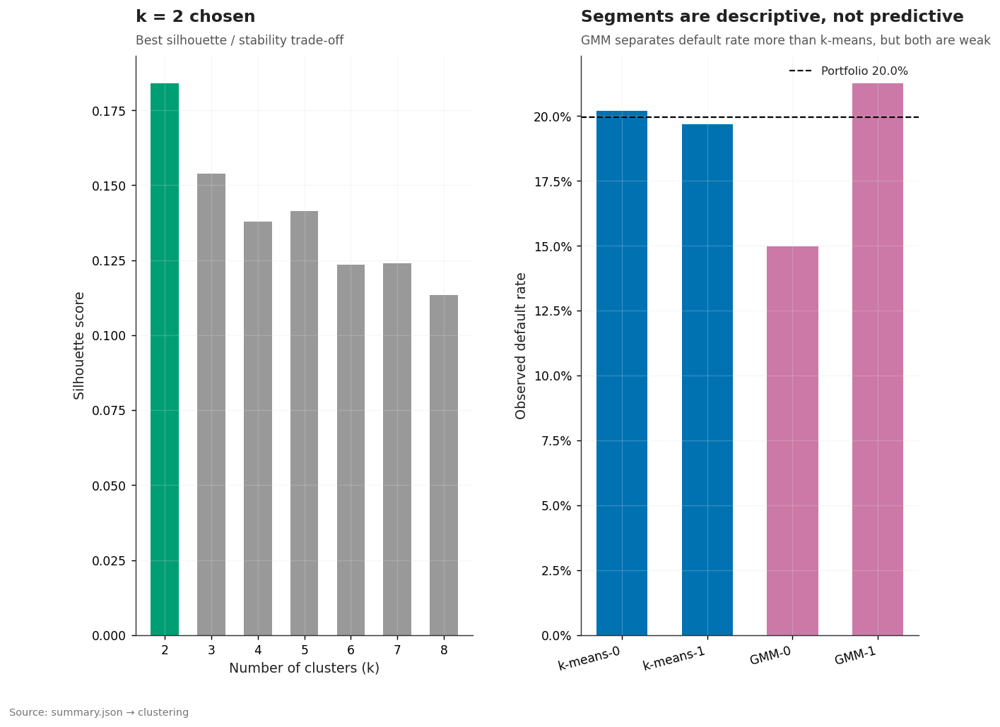

Credit-risk modeling on 1.3M Lending Club loans
An end-to-end, reproducible credit-risk study: probability of default, loss given default, expected loss and a Monte-Carlo portfolio loss distribution — built so the numbers can be trusted, including the ones that did not work.
Portfolio EAD —. All figures on this page are read
from reports/results/summary.json at build time; nothing here is hardcoded.
01The problem and the data
Lending Club publishes every loan it originated, with the outcome as of the end of 2018. The task is the one a lender actually faces: estimate how much of a portfolio will default, how much is lost when it does, and how much capital the tail requires.
Of — originated loans, — have reached a final status (Fully Paid, Charged Off or Default). A loan is labelled default when its status is Charged Off or Default; the overall resolved default rate is —.
The primary model is trained on the — vintages and evaluated, once, on the — 36-month vintages (— and — default rates). The test window is used only for the final number — never for tuning.
02The pitfall: right-censoring
A loan can only be scored as paid or defaulted once it has finished. Late vintages are still running, so they look healthier than they are — and a model evaluated on them looks better than it is. This is the headline finding of the project.
| Window | Test years | AUC | Score PSI |
|---|---|---|---|
| Mature (primary) | 2014–2015 | — | — |
| Censored (secondary) | 2017–2018 | — | — |
| Inflation from censoring | — | ||
03The PD scorecard
A weight-of-evidence logistic scorecard is compared against gradient boosting and tree challengers on the same out-of-time window, all with leakage-free features known at origination.
| Model | AUC | Gini | KS | Features |
|---|
| Benchmark (wide features + grade / int_rate) | AUC | Gini | AUC vs champion |
|---|---|---|---|
| LightGBM on all variables incl. lender grade & rate | — | — | — |
04Calibration, LGD and expected loss
A score only becomes money once it is calibrated to a probability and combined with loss given default. Both steps here are reported as they stand, including the null results.
| Model | MAE | RMSE | R² |
|---|
05Portfolio risk by Monte Carlo
A single-factor Vasicek model turns the calibrated PDs, LGDs and exposures into a full loss distribution, so capital can be read off the tail instead of a point estimate. — paths, run in Python; the page only displays the result.
Variance reduction was measured, not assumed: stratified sampling cuts the standard error by — and antithetic variates by —. Stratified sampling is the technique of record.
06What did not work, and limitations
Kept visible on purpose. A portfolio that only shows its wins is not a portfolio you can trust.
Forecasting the monthly default rate
| Method | RMSE | MAE | MASE |
|---|
Behavioural segmentation
| Segment | Loans | Share | Default rate |
|---|
Silhouette —, stability ARI —. k-means separates default rate by only —; a Gaussian mixture separates more (—) but is less stable. Neither is used as a model feature.

Selection bias
The data only contains approved loans. An exploratory reject-inference pass suggests the rejected applicants would default more often (illustrative PD gap —), but rejected applicants have no observed outcome, so the gap cannot be validated. It is labelled exploratory and feeds no headline number.
07How to reproduce
Everything is deterministic (seed 42). The pipeline runs from raw CSV to the figures
and this page's data.json; the —-test
suite checks that no number drifts.
git clone https://github.com/pablohuidobrogarcia/credit-risk-modeling.git
cd credit-risk-modeling
python -m venv .venv && source .venv/bin/activate # Windows: .venv\Scripts\activate
pip install -r requirements-dev.txt
# download the Lending Club data (see README) into data/raw/, then:
python -m src.pipeline all # full modelling run
python -m src.pipeline figures # rebuild the site figures + docs/data.json
python -m pytest # full test suite, incl. number-integrity checks
python -m src.report_tables --check # verify README numbers against summary.jsonStack
Python · pandas · scikit-learn · LightGBM · SHAP · statsmodels · matplotlib · DuckDB / HiveQL · Plotly (pinned CDN). Data quality, SQL, EDA and time series, PD scorecard and challengers, calibration, LGD/EAD/EL, clustering, and a Monte-Carlo Vasicek portfolio simulation.